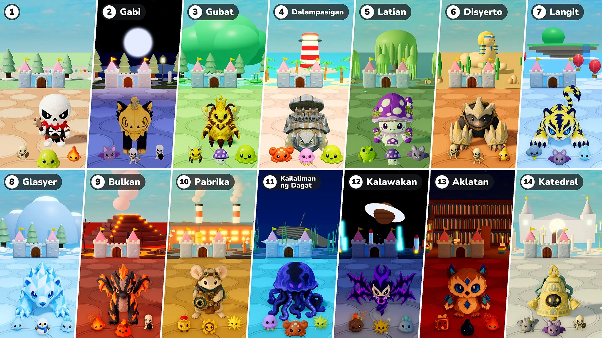

Balita
Patch NotesMonChexx Patch Notes: Stat Augment · Presentasyon · Kontrol sa GamepadPatch NotesMonChexx Patch Notes: Stat Augment · Pangalan ng Yugto · Mga Rekord Mga content updateSeason 1 · Update 02: Alon ng EbolusyonPatch NotesMonChexx Patch Notes: Balanse & Sistema ng Laban
Mga content updateSeason 1 · Update 02: Alon ng EbolusyonPatch NotesMonChexx Patch Notes: Balanse & Sistema ng Laban

Patch NotesMonChexx Patch Notes: Mga Yugto · 2× na Bilis · Mga SummonPatch NotesMonChexx Patch Notes: Bunot ng Item · Espesyal na Bunot · Pagdating ng Boss · PuntosPatch NotesMonChexx Patch Notes: Auto-susunod · Mas Maraming Boss · HP Bar ng mga Boss · Puntos · Watawat ng ApoyPatch NotesMonChexx Patch Notes: Bukal ng Mana · Star habang Lumulukso · Role ni AbyzelPatch NotesMonChexx Patch Notes: Pagbagsak ng Item at mga Antas · mga Puntod · Pagsasaayos kay SerenisPatch NotesMonChexx Patch Notes: Pagbabago sa mga Role at Katangian ng RoleMga content updateSeason 2 · Bagong Mode: Depensa ng KastilyoPatch NotesMonChexx Patch Notes: Mga Panuntunan sa Atake ng SkillPatch NotesMonChexx Patch Notes: Mga Panuntunan sa Atake · Skill PowerPatch NotesMonChexx Patch Notes: Lobby · CodexPatch NotesMonChexx Patch Notes: Binagong Tickgear · Itsura ng TindigPatch NotesMonChexx Patch Notes: Pagsasaayos kay Pebbleshell · Mga pagpapahusay sa kaginhawaan · Pag-aayos ng BugPatch NotesMonChexx Patch Notes: Pagsasaayos sa Limang PlushiePatch NotesMonChexx Patch Notes: Battle Tempo & SkillsMga content updateSeason 1 · Update 02: Alon ng EbolusyonPatch NotesMonChexx Patch Notes: Balanse & Sistema ng Laban